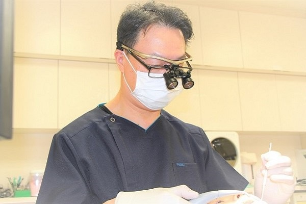
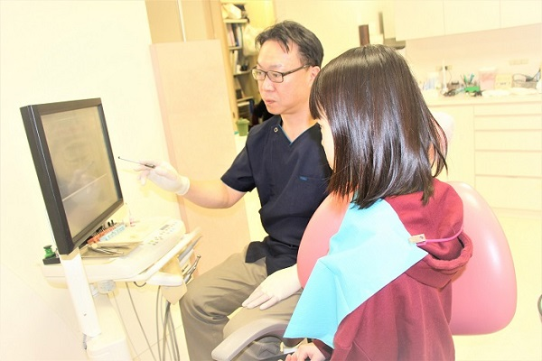
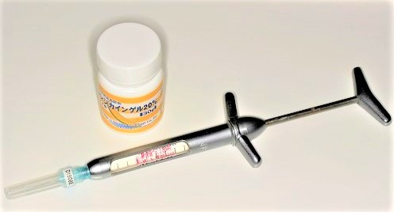
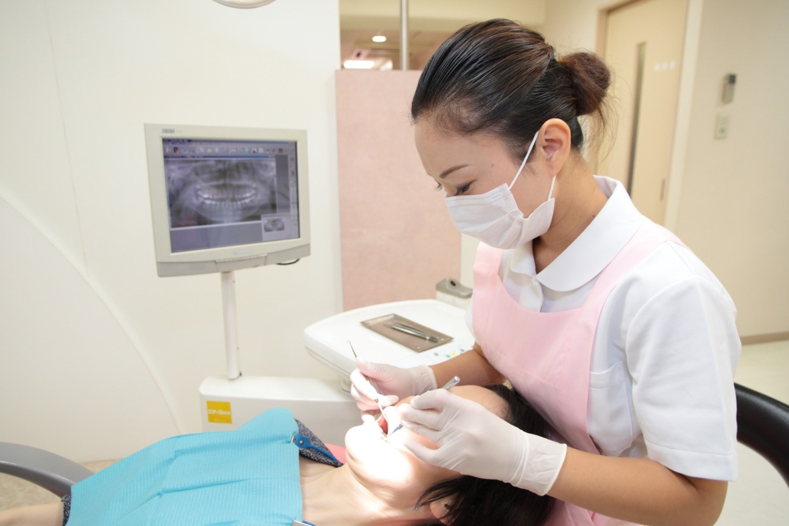
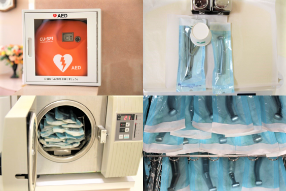

医院の特徴 CONCEPT
おかだ歯科クリニックでは、虫歯や歯周病など矯正以外の一般歯科治療を院長の岡田秀一が担当し、矯正治療を矯正歯科医の岡田美千代が担当します。
担当医が治療の度に変わることがないので、患者さまにとって、安心して治療を受けていただけるのではないかと思います。
私たちはこの東大阪市の布施で2001年より、地域の皆様の「ホームドクター」として、小さなお子さまからご高齢の方までの治療に取り組んでいます。
歯並びや歯の色・形など、歯に関するお悩みがあればお気軽にご相談ください。
また、お子さまの治療では虫歯の治療に加え、虫歯の予防、歯並びに関しても継続して診ていきます。骨格や悪習癖の問題があり早期に矯正治療した方がいい場合などは、ご希望をお聞きした上で矯正歯科医と連携して治療に当たります。
１．患者さまの気持ちになって治療を行います
歯の治療を受けようと思っている患者さまは
「歯に穴ができて放っておいたら歯が割れたけれど大丈夫だろうか？どうなるんだろう？」
「何が原因かわからないけどすごく痛い。この痛みは歯からきてるの？」
「痛みはないけど歯ぐきから出血してるようで心配」
「歯の色が気になって人前でうまく笑えない」
など、歯の悩みや治療についての不安を感じておられると思います。
当クリニックでは治療前に患者さまからしっかりとお話をお伺いし、ご希望に沿った治療プランや治療内容をわかりやすくご説明します。
２．インフォームドコンセント（説明と同意）を重視しています
問診やレントゲン検査などで必要な情報を得た後、患者さまに説明をし、同意を得て納得していただいた上で治療を行います。
レントゲン検査
当クリニックでは、デジタルＸ線画像解析システムを使用しております。
フィルムの代わりに高感度CCDセンサーを使用しているため、Ｘ線照射による被曝を軽減（被曝を最大90％以上軽減）できます。
Ｘ線照射は顔面部のみで身体には照射されません。照射量もごく微量で安全性は極めて高く、レントゲンから得られる情報はより良い治療に不可欠です。よって、初めて来院される患者さまにはレントゲン検査を受けていただきます。
妊娠中の方、妊娠の可能性のある方にも安心してお受けいただけます。基本的には不要ですが防護エプロンも用意しています。
３．痛みの少ない治療を心掛けています
痛くないようにすることで患者さまの恐怖心を和らげたり、少しでも苦痛を減らすことができればと思いながら治療に臨んでいます。
４．予防・メンテナンス
メンテナンスとは、お口の健康を維持していくための、定期的な検診・クリーニングのことです。
虫歯や歯周病を予防するためには、プロ（歯科衛生士）による定期的なケアが重要です。
お口のクリーニングや歯磨きの指導、フッ素塗布などを行うことで、虫歯や歯周病を予防できます。
また、大人の方だけでなくお子さまも定期的に検診を受けていただくことで虫歯だけでなく歯並びの管理もできます。
５．厚生労働省から「歯科外来診療環境体制」の認定を受けた歯科医院です
歯科外来診療環境体制」とは、治療の際の緊急時の対応や院内感染防止対策の取り組みを行っている体制のことです。
患者さまが安心して治療を受けていただけるような医療環境づくりに努めております。